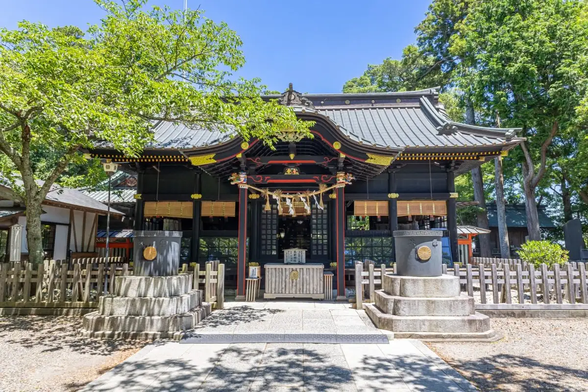
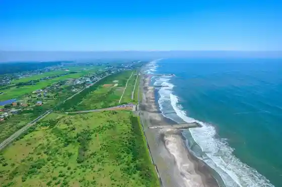
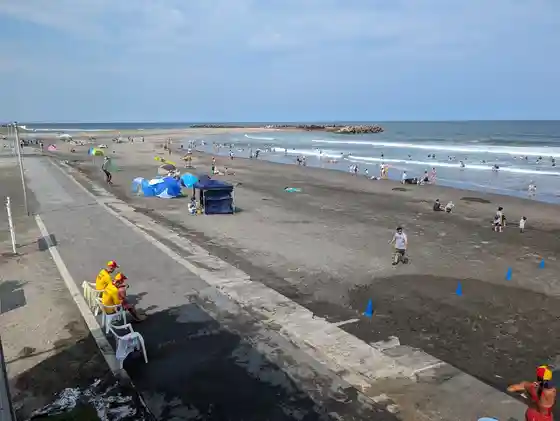
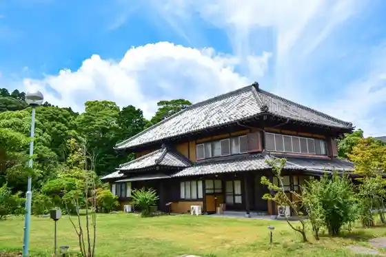

Japan / Chiba / Ichinomiyamachi
Ichinomiyamachi
Ichinomiyamachi · Chiba
Ichinomiyamachi
Highlighted on the Chiba map.

Sights
Kazusa Kuniichi Yuki Miya Tama Mae Shrine
Ichinomiyamachi, Chiba · 0475-42-2711 · Official / source link
Tsurigasaki Coast
Ichinomiyamachi, Chiba · 0475-42-1425 · Official / source link

Ichinomiyamachi Coast (Ichinomiyamachi Beach)
Ichinomiyamachi, Chiba · 0475-42-1427 · Official / source link

Ichinomiyamachi Joba Center
Ichinomiyamachi, Chiba · 0475-42-2851 · Official / source link
Campsite TORAMI
Ichinomiyamachi, Chiba · 080-4366-0800 · Official / source link

Ocean's camp TORAMII-ichinomiya
Ichinomiyamachi, Chiba · 050-3550-1129 · Official / source link
Nosambutsu Chokubai Tokoro Na no Hana Higashi Nami Ken Mise
Ichinomiyamachi, Chiba · 0475-47-3600 · Official / source link
Kami Sen Osanpo Garden
Ichinomiyamachi, Chiba · 0475-42-4627 · Official / source link
Ichigo Kari no Beriitaun
Ichinomiyamachi, Chiba · 090-6046-9595 · Official / source link
Ine Hana Shuzo
Ichinomiyamachi, Chiba · 0475-42-3134 · Official / source link
Ichinomiyamachi Kanko Ichigo Kumiai
Ichinomiyamachi, Chiba · 0475-40-0015 · Official / source link
Kondo Ichigo Sono
Ichinomiyamachi, Chiba · 090-3451-6018 · Official / source link